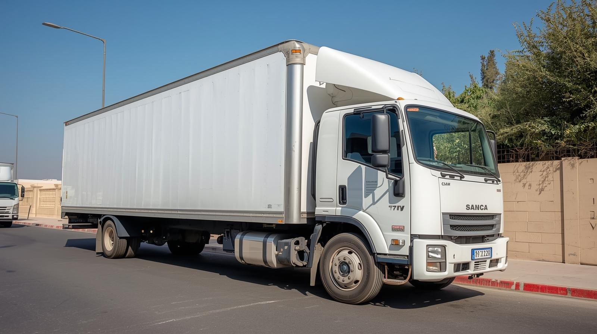

دينا نقل عفش حي الملز

إذا كنت تبحث عن دينا نقل عفش حي الملز بخبرة عالية وأمان كامل، فإن شركة نقل الرياض تقدم لك الحل الأمثل لنقل أثاثك بكل سهولة وسرعة، تتميز خدماتنا بالفك والتركيب والتغليف الاحترافي، مع توفير فريق متخصص يضمن سلامة أغراضك مهما كانت المسافة أو حجم الأثاث، احصل على خدمة نقل آمنة ومريحة داخل حي الملز الآن واتصل بنا لتجربة نقل عفش لا مثيل لها.
أفضل دينا نقل عفش حي الملز بالرياض
عند البحث عن أفضل دينا نقل عفش حي الملز بالرياض، تأتي شركة نقل الرياض في مقدمة الشركات الموثوقة التي توفر خدمات نقل أثاث متميزة، تتميز الشركة باستخدام سيارات حديثة مجهزة لنقل جميع أنواع الأثاث بأمان، مع تقديم خدمات الفك والتركيب والتغليف الاحترافي، فريق العمل المدرب بعناية يضمن سرعة التنفيذ والحفاظ على سلامة أغراضك، مما يجعل تجربة النقل خالية من أي قلق. إذا أردت نقل عفشك داخل حي الملز بسهولة وراحة، فإن شركة نقل الرياض هي خيارك الأمثل.
شركة نقل عفش حي الملز تقدم خدمة احترافية وسريعة
تُعتبر شركة نقل عفش حي الملز من أبرز الشركات التي تقدم خدمة احترافية وسريعة لنقل الأثاث داخل الحي وخارجه، تعتمد الشركة على فرق عمل مدربة ومهرة، إضافة إلى سيارات مجهزة بأحدث التقنيات لضمان سلامة الأثاث أثناء النقل، تشمل خدماتها التغليف، الفك، والتركيب، لتوفير تجربة نقل خالية من المتاعب. مع شركة نقل الرياض، يمكنك التأكد من أن أثاثك سينتقل بسرعة وأمان مع خدمة محترفة تلبي كل احتياجاتك.
خدمات نقل عفش بالملز مع الفك والتركيب والتغليف
تقدم شركة نقل الرياض خدمات متنوعة لنقل العفش بحي الملز، تتمثل خدماتها في:
- نقل الأثاث بالملز بأمان وسرعة داخل الحي وخارجه.
- خدمة الفك والتركيب لجميع قطع الأثاث لضمان النقل دون تلف.
- التغليف الاحترافي باستخدام مواد عالية الجودة لحماية الأثاث من الخدوش والصدمات.
- فرق عمل مدربة ومؤهلة لضمان التعامل مع جميع أنواع الأثاث بحرفية.
- استخدام سيارات مجهزة وحديثة لتسهيل عملية النقل مهما كان حجم الأثاث.
- خدمة سريعة وموثوقة لتوفير الوقت وتقليل أي إزعاج أثناء الانتقال.
مميزات دينا نقل عفش حي الملز عن باقي الشركات
تتميز دينا نقل عفش حي الملز بعدة نقاط تجعلها تتفوق على باقي شركات النقل في الرياض:
- احترافية عالية: فريق عمل مدرب على أعلى مستوى للتعامل مع جميع أنواع الأثاث.
- خدمات متكاملة: تشمل التغليف، الفك، والتركيب لضمان نقل آمن وكامل.
- سرعة التنفيذ: النقل يتم بطريقة منظمة وسريعة لتوفير الوقت والجهد للعملاء.
- سلامة الأثاث: استخدام مواد التغليف الحديثة والسيارات المجهزة يحمي الأثاث من أي تلف.
- أسعار تنافسية: خدمات مميزة بجودة عالية وبأسعار مناسبة.
- مرونة وخدمة عملاء متميزة: الاستجابة السريعة لجميع الاستفسارات وتلبية احتياجات العملاء بشكل شخصي.
مع شركة نقل الرياض، ستجد تجربة نقل أثاث فريدة تجمع بين الجودة والراحة والموثوقية، مما يجعلها الاختيار الأمثل داخل حي الملز.
أسعار دينا وشركة نقل عفش حي الملز لعام 2025
تحرص دينا نقل عفش حي الملز على تقديم خدمات نقل أثاث عالية الجودة بأسعار تنافسية تتناسب مع جميع احتياجات العملاء، تشمل الأسعار عادةً الخدمات الأساسية مثل التغليف، الفك، والتركيب، مع مراعاة حجم الأثاث ونوعه والمسافة المطلوب النقل إليها. كما توفر الشركة مرونة في تحديد الأسعار حسب متطلبات كل عميل لضمان تجربة نقل مريحة وموثوقة، مع الحفاظ على أعلى معايير الأمان والجودة أثناء النقل داخل حي الملز وخارجه.
كيف تختار أفضل دينا نقل عفش بالملز؟
لاختيار أفضل دينا نقل عفش حي الملز، يجب التركيز على عدة عوامل تضمن لك خدمة آمنة وموثوقة، أولاً، تحقق من خبرة الشركة وسمعتها بين العملاء السابقين لضمان التعامل مع فريق محترف يعرف كيفية نقل جميع أنواع الأثاث بدون تلف، ثانيًا، تأكد من تقديم خدمات متكاملة تشمل التغليف، الفك، والتركيب، واستخدام مواد وأدوات حديثة تحافظ على سلامة الأثاث، ثالثًا، اختَر شركة توفر مرونة وسرعة في التنفيذ مع دعم خدمة العملاء للرد على أي استفسار، وأخيرًا، تأكد من الشفافية في شروط الخدمة والعقد، فهذا يضمن تجربة نقل مريحة وخالية من المفاجآت.
سيارات مجهزة لنقل العفش داخل حي الملز بأمان
توفر دينا نقل عفش حي الملز سيارات مجهزة خصيصًا لنقل الأثاث بأمان وسلاسة داخل الحي وخارجه، تتميز هذه السيارات بمساحات واسعة وتصميمات تحافظ على سلامة جميع أنواع الأثاث، سواء كانت قطع كبيرة أو هشة، كما تُستخدم أدوات تثبيت متطورة لضمان ثبات الأثاث أثناء النقل، مع فريق عمل مدرب على تحميل وتفريغ القطع بطريقة احترافية. بفضل هذه المعدات والسيارات الحديثة، يضمن العملاء تجربة نقل أثاث آمنة وسريعة دون أي قلق على أغراضهم.
عمالة متخصصة في نقل الأثاث داخل حي الملز بالرياض
توفر دينا نقل عفش حي الملز فريق عمل متخصص ومدرب على أعلى مستوى لنقل الأثاث داخل حي الملز بالرياض، تتسم هذه العمالة بالخبرة والمهارة في التعامل مع جميع أنواع الأثاث، سواء كانت قطع كبيرة أو هشة، مع الحرص على سلامتها أثناء الفك، التغليف، والنقل، بفضل الكفاءة العالية والانضباط، يضمن فريق العمل تنفيذ عملية النقل بسرعة ودقة، مما يجعل تجربة النقل خالية من الإجهاد أو القلق، مع الالتزام بأعلى معايير الأمان والجودة.
نصائح لتجربة نقل عفش ناجحة في حي الملز
لضمان تجربة نقل عفش ناجحة في حي الملز، يمكن اتباع بعض النصائح المهمة:
- اختيار شركة موثوقة: تأكد من التعامل مع شركة لها خبرة في نقل الأثاث داخل الحي، مثل دينا نقل عفش حي الملز.
- التخطيط المسبق: حدد مواعيد النقل، حجم الأثاث، والخدمات المطلوبة مثل التغليف والفك والتركيب.
- التغليف الجيد: استخدم مواد تغليف مناسبة لحماية الأثاث من الصدمات والخدوش أثناء النقل.
- توضيح التفاصيل مع العمالة: أبلغ فريق العمل بالقطع الهشة أو الكبيرة لتأمينها بشكل مناسب.
- التحقق من السيارة والمعدات: تأكد من استخدام سيارات مجهزة وأدوات تثبيت قوية لضمان النقل الآمن.
- مراجعة الأثاث بعد النقل: افحص الأثاث فور وصوله للتأكد من سلامته وإتمام عملية التركيب بشكل صحيح.
باتباع هذه النصائح، تصبح تجربة نقل العفش في حي الملز سهلة، سريعة، وآمنة، مع تقليل أي إجهاد أو مخاطر على الأثاث.
سيارات نصف نقل لنقل العفش بالرياض
أفضل شركة توفر دينا نقل عفش حي الملز بأسعار تنافسية
إذا كنت تبحث عن أفضل شركة توفر دينا نقل عفش حي الملز بأسعار تنافسية، فإن شركة نقل الرياض هي خيارك الأمثل، تقدم الشركة خدمات نقل أثاث متكاملة تشمل التغليف، الفك، والتركيب باستخدام سيارات مجهزة وفرق عمل مدربة لضمان سلامة أثاثك أثناء النقل، بالإضافة إلى ذلك، تركز الشركة على توفير أسعار تنافسية تناسب جميع العملاء، مع الحفاظ على جودة الخدمة وسرعتها، اختر شركة نقل الرياض لتجربة نقل آمنة وسهلة داخل حي الملز، واستمتع براحة البال وسهولة الانتقال بدون أي عناء.
في الختام، تعتبر دينا نقل عفش حي الملز خيارًا مثاليًا لكل من يبحث عن نقل أثاث آمن واحترافي داخل الحي وخارجه. بفضل خبرة فريق العمل، السيارات المجهزة، وخدمات الفك، التغليف، والتركيب، تضمن الشركة راحة البال وسهولة الانتقال دون أي عناء. وللحصول على أفضل تجربة بأسعار تنافسية وجودة عالية، يمكنك الاعتماد على شركة نقل الرياض لتلبية جميع احتياجاتك في نقل العفش بسرعة وأمان. لا تتردد في التواصل معهم الآن للحصول على خدمة مميزة تجعل تجربة النقل سهلة ومريحة.
الأسئلة الشائعة حول دينا نقل عفش حي الملز
ما هي الخدمات التي تقدمها دينا نقل عفش حي الملز؟
تقدم الشركة خدمات متكاملة تشمل نقل الأثاث، التغليف، الفك، والتركيب، مع سيارات مجهزة وفريق عمل متخصص لضمان نقل آمن وسلس لكل القطع.
هل توفر دينا نقل عفش حي الملز أسعار تنافسية؟
نعم، توفر الشركة أسعارًا تنافسية تناسب جميع العملاء، مع الحفاظ على جودة الخدمة وسرعة التنفيذ، لضمان تجربة نقل مريحة وموثوقة.
هل يمكن نقل جميع أنواع الأثاث، بما في ذلك القطع الكبيرة أو الهشة؟
نعم، فريق العمل متخصص في التعامل مع جميع أنواع الأثاث، سواء كانت قطع كبيرة، ثقيلة، أو هشة، مع الاهتمام بتثبيتها بشكل آمن أثناء النقل.